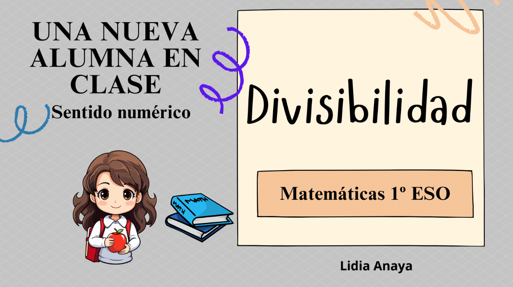
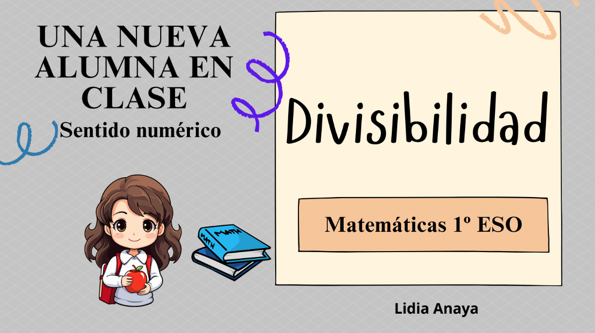

DIVISIBILIDAD


¡Buenas tardes!
Os comparto el documento completo con todo lo que vamos a estudiar a lo largo de noviembre sobre divisibilidad. En él exploraremos desde los conceptos básicos de múltiplos y divisores hasta temas más avanzados como criterios de divisibilidad y números primos. También aprenderemos la técnica de la criba de Eratóstenes para identificar números primos y terminaremos con ejercicios de factorización, máximo común divisor y mínimo común múltiplo.
Este material está pensado para que podamos entender la divisibilidad de una manera práctica y aplicada a la organización de nuestra clase.
¡Un saludo!
Lidia
Obra publicada con Licencia Creative Commons Reconocimiento Compartir igual 4.0